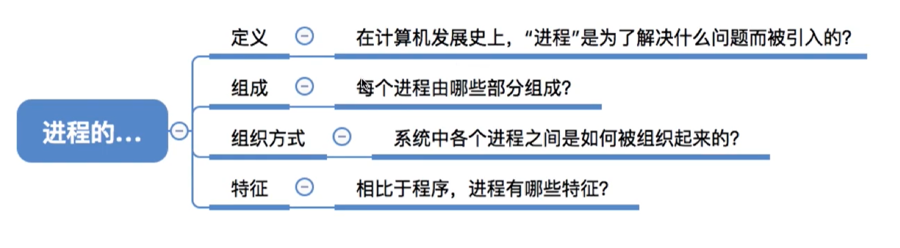
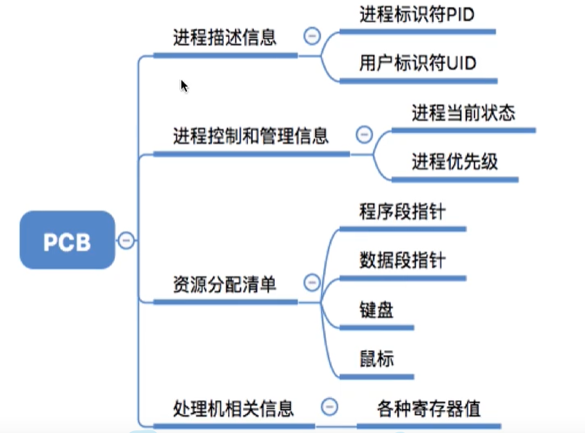
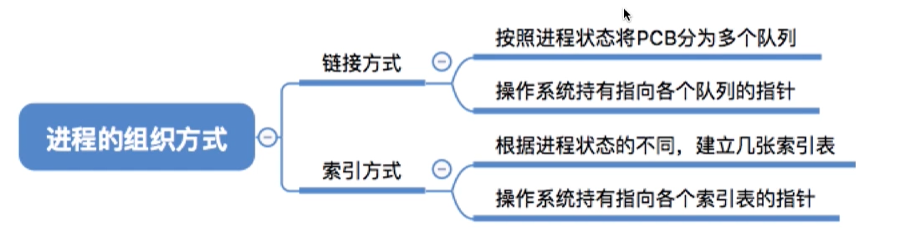
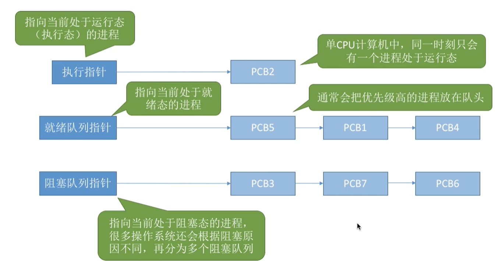
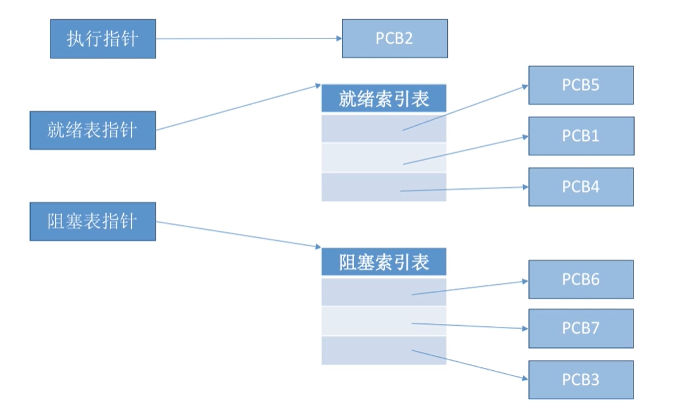
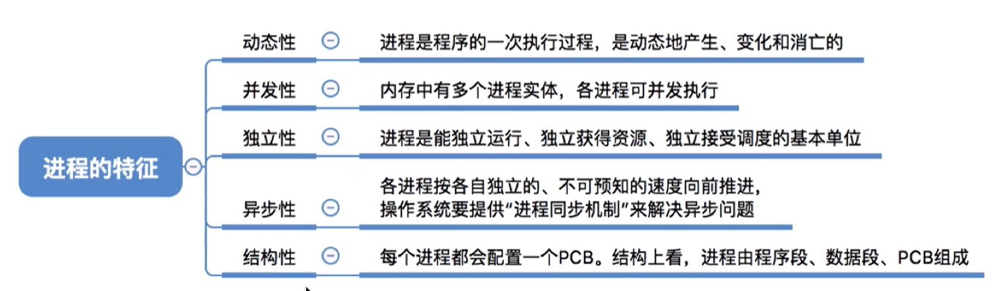
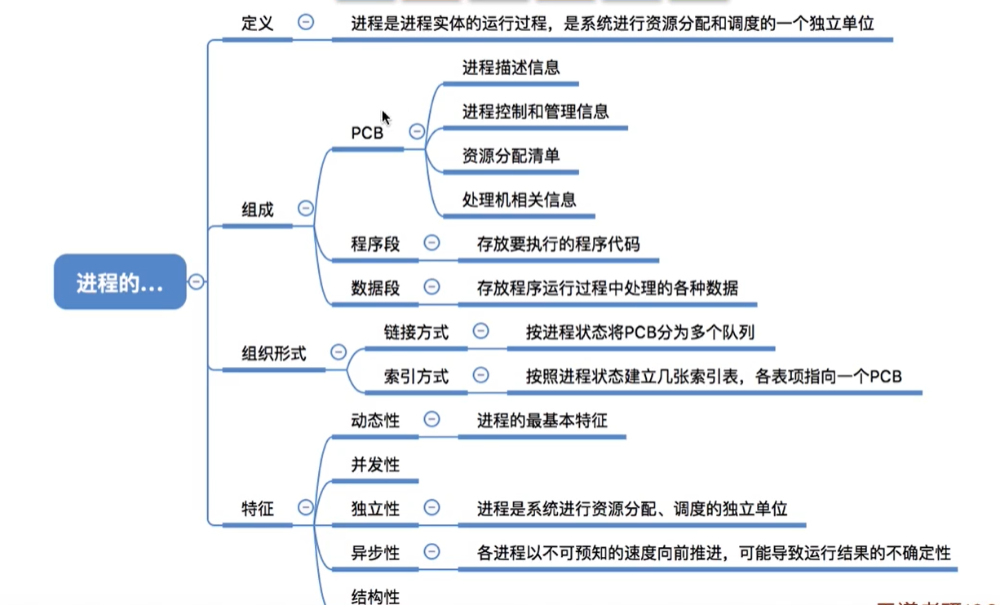

进程的定义，组成，组织方式，特征 （七）
本文最后更新于：9 个月前
知识总览

进程的定义
程序：就是一个指令序列
早起计算机的时候，只支持单道程序，内存里面只有一个程序在跑，分为程序段（程序代码）和数据段（变量）。
引入多道程序之后，内存可以有多道程序运行，各个程序的代码、运算数据存放的位置不同，操作系统需要怎么才能找到程序的存放位置呢。
操作系统在每一个进程执行之前，都会创建一个叫PCB（进程控制块）的这样的一个东西，用来描述进程当前的信息。
程序段，数据段，pcb三部分组成了进程实体（进程映像）。一般情况下，我们把进程实体就简称为进程，例如：所谓创建进程，实质上创建进程实体中的pcb，而撤销进程，实质上也是撤销进程实体中的pcb
注意：pcb是进程存在的唯一标志
进程是进程实体的运行过程，是系统进行资源分配和调度的一个独立单位。
进程的组成
程序段
代码本身，指令序列
数据段
程序运行时使用、产生的运算数据。如全局变量，局部变量，宏定义的常量都存放在数据段内。
PCB
操作系统通过pcb来管理进程，因此pcb中应该包含操作系统对其进程管理所需的各种信息（相当于进程运行的元信息）。

进程的组织
在一个系统中，通常有十级到千级的pcb，为了能对他们加以有效的管理，应该用适当的方式把这些pcb组织起来。
上面讲到的，进程的组成是哪几个部分组成了进程，进程的组织，是讲多进程之间的组织方式
一共分为两种：链接方式和索引方式

链接方式

一共有三种指针，
执行指针：指向当前处于就绪态的进程
就绪队列指针：当前排队的进程，会根据优先级高低进行排列
阻塞队列指针：指向当前处阻塞态的进程
索引方式
同样也有三个指针，只不过指向的是一个表，而表中还会指向相应的pcb

进程的特征

回顾

本博客所有文章除特别声明外，均采用 CC BY-SA 4.0 协议 ，转载请注明出处！